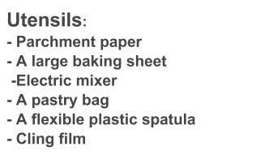
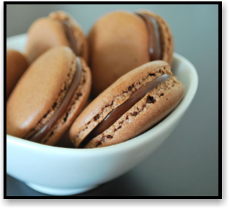

Ingredients:
12 egg whites
6 tablespoons caster sugar
3 cups ground almonds
3 cups icing sugar
5 3/4 tablespoons Dutch-processed cocoa
1 cup (100 g) bitter chocolate (70% cocoa min.)
3/4 cup heavy cream
2 3/4 ounces of black truffles, fresh, washed and brushed

Preparation of Macaroons:
Preheat oven to 360°F . Cover the baking sheet with a sheet of parchment paper. Place the egg whites in a large bowl and then mount them in snow with the electric mixer, adding small doses of caster sugar. Book. In a bowl, mix together the ground almonds with icing sugar and bitter cocoa powder. Stir gently and then add slowly this mixture to egg whites, helping you with a soft plastic spatula, until the mixture is homogeneous. Pour the mixture into a pastry bag. Then form small balls of dough about 2 to 3 cm in diameter (well spaced) on the baking sheet. Bake for 10 minutes When cooked, remove the plate from the oven and let it cool.
Preparation of Truffles:
Peel the truffles, then finely chop the 4 / 5 of total truffles. Reserve about 1 fifth of the total volume of whole truffles. Cut the chocolate into small chips. Pour the cream into a small saucepan and bring to a boil over low heat, then add the chocolate chips. Mix vigorously to obtain a homogeneous ganache, then remove from heat and let cool. Once the ganache has cooled – but not frozen – add the chopped truffles. Cut the remaining truffles into thin layers.
Final Preparation: Macaroons:
Detach the buttons from the baking sheet, cut in half (in the width direction), then top each macaroon with the equivalent of one teaspoon of truffle ganache. Top with truffles slice and close buttons. Then place the buttons into a deep dish, cover with cling film and refrigerate for 24 hours.

MACAROONS